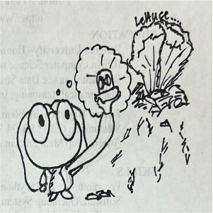
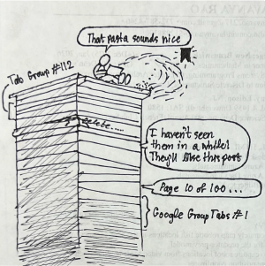

Last summer, my family began a movie binge spree. Every night, my mom asked me to find a movie for us to watch on Netflix. At some point, I ran out of light-hearted action comedies or got tired of Christmas movies to the point I started watching animal documentaries. Netflix has many documentaries! Some are about the ocean. Some are about crime. Others are about food, money, and media.
Although not as magical as a Christmas film, the last set is my favorite because I find them the most relatable and educational about everyday life. They tickle my brain because they tend to mention trickery in some form. Every character had some downfall waiting behind a dream of glory, a loophole in regulation, or just ordinary terrible luck.
About a week before the beginning of September, I watched Poisoned: The Dirty Truth About Your Food, a documentary that frames some of America's past large food-related disease outbreaks (E. Coli contaminations, for example) through gaps in regulatory standards and lack of space for waste. Oftentimes, the sources of those outbreaks could be traced back to mismanagement of waste or improper surveillance of products. For a few months, it made me paranoid, so I started to observe my consumption. I noted all of the items I normally consumed and were in the documentary, as well as why I gravitated to some places and foods but not others. More importantly, I realized the “space” I took up.
return to topIn an interview about her research on historic and modern perceptions of trash, Professor Sarah Newman points out that our trash narrates our lifestyles. She highlights this with exercises she did with her students. She showed them “7 Days of Garbage”, a collection of images by Gregg Segal depicting subjects' weekly trash, and noted, “...the products and packaging reveal details about family composition, socioeconomic status, ethnicity, gender roles, tastes and hobbies, etc” (Lee, 2023). They could guess someone if someone was, for example, a habitual smoker or ate fast food often. You could see it in their trash bins. I also noticed the bins at my school and in public were filled with emotions: the guilt someone felt for not being able to finish their food, the relief someone else had after finally being able to get a filling meal in for the day, the anticipation for a trash can someone felt while holding onto their trash for a while. Newman's work really builds that humans feel emotion towards waste, and thus our ability to make guesswork about others' lives from them.
Brian Thill, writer of Waste, argues similarly in the second chapter of his book. In a paraphrase of his reasoning, something becomes trash when one decides it is trash. Take, for example, a plastic bag. Thill spends a moment in his book talking about a plastic bag that got stuck in a tree near his home. To anyone, it's just a bag stuck in a tree it doesn't belong in. To Thill, it was something he expected to see every morning. Thus, people recognize trash because it gets called that. It needs context. People lying around items chalks up to a vague statement until one learns the act is from “7 Days of Garbage.” That context is our “space”. The emotions we feel towards our trash shapes how we decide what to include in our lives. Thus, it shapes what we throw away, how we address our belongings in public spaces, and what we choose to say in conversations about our trash.
In essence, trash dictates how we use the area around us regardless of our acknowledgement of it. Our apps, advertisements, bills, discussions, and opinions all find themselves built on understanding something. Companies play with that knowledge to get us to attend to them. Thill makes a point of this by describing “digital” waste and its accumulation into a “detritus” of sorts. Specifically, Thill refers to “digital detritus” as the collections of online clutter someone can form, such as collections of tabs on their computer or collections of favorited items. They take up space like physical trash does, and thus could be considered “wasteful”. Indeed, a need to keep our digital collections clear and organized stresses our waste systems and data systems as everyone's digital space needs to be that way. We take up space online just as we do in reality. Sometimes, that just means we want revisit a pasta recipe weeks later. I, for one, have at least five desert recipes stored in my Instagram account. Other times, it may be for an important report or messages from a friend we haven't seen in a while.
Nonetheless, the thought of a pasta recipe or late-night conversations online counting as “waste” is intriguing to me! Moreso, Newman's and Thill's interpretations of waste's importance to individuals gave me a similar tickle as my documentaries did. People and corporations can hide their corners and play with regulation because news of them can become our waste too. Someone not expecting a person to act suspiciously or dangerously with their livelihood can make it so that said person never is or will. To miss a connection between a piece of lettuce or meat and someone else's oversight is no less subjective than quickly taking something to be trash.
return to topFurthermore, the opposite also holds in that people are giving trash a new purpose beyond just viewing it differently. They're sculpting it, replacing it, and overall making its presence more pleasant to people like myself who could overlook the opportunity trash holds. Particularly, individual artists and groups have been implementing trash back into their communities in ways that can help its residents or emphasize larger issues.
For example, concrete! Inspired by the detrimental effects of plastic and glass waste on the coastal environments and their anti-decomposition characteristics, researchers Alireza Mohammadinia, Yat Choy Wong, Arul Arulrajah, and Suksun Horpibulsuk explored the potential effectiveness of replacing traditional coarse aggregates in concrete with glass and plastic shards in “Strength evaluation of utilizing recycled plastic waste and recycled crushed glass in concrete footpaths”. Based on compression test results, water uptake test results, and examinations of the concrete batch structures, they reported that partial replacement of the aggregate with glass or plastic is feasible in that it did not significantly compromise the strength of the concrete, making it potentially useful in different locations besides areas/pathways where such resistance matters less. In essence, their work holds to highlight our capability to reintroduce waste quietly, thus protecting the environment without emphasizing any element of the trash being used.
Furthermore, artist Vik Muniz is another example of individuals reusing trash to better his community as his work gives telling messages of the people behind them and raises awareness of local issues. Particularly, Muniz's “Museum of Ashes” series uses remains of the burnt-down National Museum of Brazil to give new life to the artifacts lost in the fire. Muniz's work is inspiring because it emphasizes trash's ability to act as a reminder of the human position. Specifically, as he recounts in his New York Times article discussing his career and art style, “I channeled my sadness over the fire's destruction into creativity” (Muniz, 2023). In essence, Muniz's experiences as an explorer of preservation pained with loss helped him channel his shift in perception and thus a shift in his methods of art. Muniz is an experiencer, in a sense, just as Thill is. Although his experience is more dramatic, Muniz's work stands to shout that trash has story. It can communicate pain just as it can communicate regret, given there is someone to emphasize that element like Muniz can. Although Muniz's work and that of Horpibulsuk and his colleagues speak at different volumes, they stand as representations of the power involvement has in changing trash from something one removes to something one can celebrate.
return to topPersonally, I can't emphasize my trash like they can. However, I can reconsider my everyday until its changes add a gravity like Muniz's feelings or an inspiration like those of Horpibulsuk's team. I can aim to create like artist Adrian Kondratowicz. In 2008, he placed several colorful trash bags around his neighborhood in an attempt to convince his neighbors to learn more about their community's waste management. It was a simple, fun project, but it resulted in his community coming together to enjoy the bags. In paraphrasing their reactions: for some, they became a fun fashion statement to protect them from the rain, and for others, it made them pause and think more about what they were throwing away. Either way, a small project blossomed into a community-wide element.
At my core, I love little things-the things one does not always think about, the little joys, the smaller parts of our lifestyles that can make us come together or fall apart. I love them because in detail lies thought. The idea that trash is subjective is nothing revolutionary, but it's the sort of idea that doesn't come to mind unless someone stays around it long enough. Yet, at the same time, I've stood around my trash all my life and only just realized the depth it holds.
Thus, I'm documenting my weekly trash in this project. Consider it a personal exploration of something I should get to know better-so long as it does not become meta by being waste itself! If all goes well, it may turn out like those trash bags. At worst, it'll be a collection of things I might come to miss or cherish. I welcome anyone following along to experience my trash with me as I question where I am headed, for unlike Newman, Thill, Muniz, and others, my trash project is inspired by questions! What can become of the things I consume? How can I change them to slowly make a better me? What actually is my trash? All I need now are some new Christmas movies!
return to top